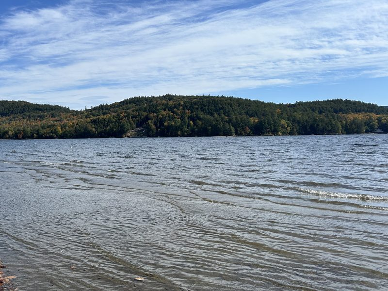

Location & Area
A peaceful corner of New York's Adirondack Park, yet only minutes from I-87 (the Adirondack Northway).
Schroon Lake, NY
Schroon Lake is a small town in the southeastern Adirondacks, with shops and restaurants in its hamlet.
Things to do
In town
The town of Schroon Lake has public access and public boat launches.
Hiking
The Pharaoh Lake and Hoffman Notch Wilderness areas are close by. The High Peaks are a scenic drive north.
Day trips
Lake George, Lake Placid and the Olympic sites, and the villages of the Adirondacks and Champlain Valley.
Seasons
Summer days in the area and fall foliage, plus winter skiing and snowshoeing in the region.



Getting here
The Hayes House41 Hayes Road
Schroon Lake, New York 12870
Schroon Lake sits right off I-87 (the Adirondack Northway), which makes it an easy drive from the Capital Region, with Glens Falls and Lake George to the south.